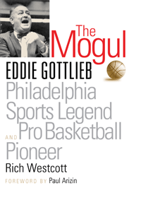

<body bgcolor="#FFFFFF" text="#000000" link="#0000FF" vlink="#CC0000" alink="#CC0000"><center><hr width="350" size="1" align="center" noshade>The first full-length study of Eddie Gottlieb, a pioneering player, coach, owner, and entrepreneur in basketball and baseball<hr width="350" size="1" align="center" noshade><p><a href="https://cdcshoppingcart.uchicago.edu/Cart/ChicagoBook.aspx?ISBN=9781592136551&&PRESS=temple" target="_top">Buy this book!</a> | <a href="https://cdcshoppingcart.uchicago.edu/Cart/Cart.aspx?PRESS=temple" target="_top">View Cart</a> | <a href="https://cdcshoppingcart.uchicago.edu/Cart/Cart.aspx?PRESS=temple" target="_top">Check Out</a></p><p></p></center><!--none//--><h1>The Mogul</h1>
<H2>Eddie Gottlieb, Philadelphia Sports Legend and Pro Basketball Pioneer</H2>
<H2>Foreword by Paul Arizin</H2>
<h3>Rich Westcott</h3>
<P>cloth 1592136559 $45.50, Apr 08, <FONT COLOR=#990033>Available</FONT>
<BR> 320 pp
6x9
1&nbsp;figure 50&nbsp;halftones
</P><BLOCKQUOTE><I>"A great sports biography consists of three key ingredients: a fascinating subject, a skillful writer and lots of research behind the scenes. </i>The Mogul<i> possesses all three in abundance. I spent ten years working with Eddie Gottlieb, an American sports treasure, and now, for the first time, I really feel I know him. You will too."</i>
<br>&#151<b>Pat Williams</b>, Senior Vice President, Orlando Magic</I></BLOCKQUOTE>
<p>Russian-Jewish immigrant Eddie Gottlieb was one of the most powerful non-playing sports figures in Philadelphia from the 1920s until his death in 1979. A master promoter, Gottlieb—dubbed the “Mogul” for his business acumen—was influential in both basketball and baseball circles, as well as a colorful figure in his own right.
<p>A member of the Basketball Hall of Fame, Gottlieb founded, played and coached for the legendary South Philadelphia Hebrew Association (SPHAS) basketball team in the 1920s and 1930s. Only 5’ 8”, Gottlieb was nevertheless a very good basketball player. But it was behind the scenes where he excelled. He coached, helped form the National Basketball Association, and owned the Philadelphia Warriors franchise for many years. He signed Wilt Chamberlain to his first NBA contract. He also created the NBA's annual schedule of games for more than a quarter of a century. Outside basketball, Gottlieb’s achievements included co-owning the Philadelphia Stars baseball team in the Negro Leagues and trying unsuccessfully to buy the Philadelphia Phillies. He was Philadelphia’s leading sports booking agent from the 1920s into the 1950s for everything from sandlot baseball to semipro football to professional wrestling.
Drawing upon dozens of interviews and archival sources, and featuring more than fifty photographs, <i>The Mogul</i> vividly portrays Eddie Gottlieb’s pivotal role in both Philadelphia’s and America’s sports history.
<BR>&nbsp;<h2>Excerpt</h2><P>Excerpt available at <a href="http://www.temple.edu/tempress">www.temple.edu/tempress</a></p>
<BR>&nbsp;<h2>Reviews</h2>
<p><I>"</i>The Mogul<i> is a full and colorful portrayal of the legendary Eddie Gottlieb, the primary force behind the acceptance and growth of professional basketball from its meager beginnings. The intimate behind-the-scenes descriptions of the early years of pro hoops are thoroughly researched and skillfully woven into the story by Rich Westcott."</i>
<br>&#151<b>Jack Ramsay</b>, Former former NBA coach and ESPN basketball analyst
<p><I>"</i>The Mogul<i> is a wonderful book, and brings back great memories of one of the giants of not only the NBA, but of all sports. Westcott deftly brings out the Jewish impact of the early days of professional basketball, when it was considered a Jewish sport. My great recollection of Eddie Gottlieb was when I was with him in the NBA office, and he was doing the scheduling with all of its intricacies. I thought of him as a surrogate father, and I truly loved him, even though I never won an argument against him. This is a wonderful read for anyone who wants to know about the early days of professional basketball and relishes its history."</i>
<br>&#151<b>Dolph Schayes</b>, former Syracuse National and former Philadelphia 76er
<p><I>"[A] long overdue look at Gottlieb…Westcott does a superb job...present[ing] an unusually well-rounded portrait. While Gottlieb’s varied life could probably encompass several volumes, </i>The Mogul <i>gets enough of the man between two covers."</i>
<br>&#151<b><I>The Philadelphia City Paper</i></b>
<p><I>"[T]he book offer[s] intriguing historical insights on one man’s contribution to Philly’s legendary obsession with sports."
</i><br>&#151<b><I>Philadelphia Magazine</i></b>
<p><I>"[A] straightforward, unvarnished biography of a rumpled, Runyanesque, jowly little man…it is the product of relentless researching and meticulous detailing and documentation."
</i><br>&#151<b><I>The Philadelphia Inquirer</i></b>
<p><i>"</i>The Mogul<i>, written in 2008 by the prolific sports historian Rich Westcott, examines the life of Gottlieb, who later owned the Philadelphia Warriors and functioned as the NBA’s de facto chief executive....Westcott’s book tells the story accurately."</i> <br>&#151<b><i>The Broad Street Review</i></b>
<BR>&nbsp;<h2>Contents</h2><P>
<br>Foreword by Paul Arizin
<br>Introduction
<br>1. From Russia to South Philly
<br>2. A Jewish Man's Game
<br>3. King of the Court
<br>4. They Were the Days
<br>5. A Born Promoter
<br>6. Black Baseball Thrives
<br>7. Owner of the Stars
<br>8. Trying to Buy the Phillies
<br>9. A New League, a New Team
<br>10. First Champions of the BAA
<br>11. New Owner of the Warriors
<br>12. Integration Arrives
<br>13. One Year at the Top
<br>14. The Dipper Comes Home
<br>15. Going to San Francisco
<br>16. The 76ers Arrive
<br>17. The Final Years
<br>Acknowledgments
<br>Sources
<br>Index
</P><BR>&nbsp;<H2>About the Author(s)</H2>
<table><tr><td valign="top"><img src="/tempress/authors/1917_au.gif" height="90" width="75"></td><td width="100%" valign="middle"><p><b>Rich Westcott</b> is a writer and sports historian and a veteran of more than 40 years as a working journalist. He is a leading authority on the Phillies, and for 14 years was editor and publisher of <i>Phillies Report</i>. A native Philadelphian, he is the author of 18 other books, including <i><a href="1818_reg.html" target="_top">Veterans Stadium</a></i>, <i><a href="1273_reg.html" target="_top">Philadelphia's Old Ballparks</a></i>, <i><a href="987_reg.html" target="_top">The Phillies Encyclopedia (with Frank Bilovsky)</a></i>, and <i><a href="1533_reg.html" target="_top">A Century of Philadelphia Sports</a></i>. Westcott has seen or covered all the major teams in Philadelphia, including the Warriors and 76ers.</P></td></tr></table>
<BR><H2>Subject Categories</H2>
<p><A HREF="/tempress/sports.html" TARGET="_top">Sports</a>
<BR><A HREF="/tempress/philly.html" TARGET="_top">Philadelphia Region</a>
<BR><A HREF="/tempress/biography.html" TARGET="_top">Biography/Memoir/Autobiography</a>
</p>
<p align="center"><a href="https://cdcshoppingcart.uchicago.edu/Cart/ChicagoBook.aspx?ISBN=9781592136551&&PRESS=temple" target="_top">Buy this book!</a> | <a href="https://cdcshoppingcart.uchicago.edu/Cart/Cart.aspx?PRESS=temple" target="_top">View Cart</a> | <a href="https://cdcshoppingcart.uchicago.edu/Cart/Cart.aspx?PRESS=temple" target="_top">Check Out</a></p><p><font face="Arial" size="1"><a href="copyright.html" onMouseOver="window.status='Web Copyright Policy';return true;" onMouseOut="window.status=''" title="Web Copyright Policy">&copy;</a> 2015 <a href="http://www.temple.edu" target="new" onMouseOver="window.status='Link to Temple University home page';return true;" onMouseOut="window.status=''" title="Link to Temple University home page">Temple University</a>. All Rights Reserved. http://www.temple.edu/tempress/titles/1917_reg.html</font></p>